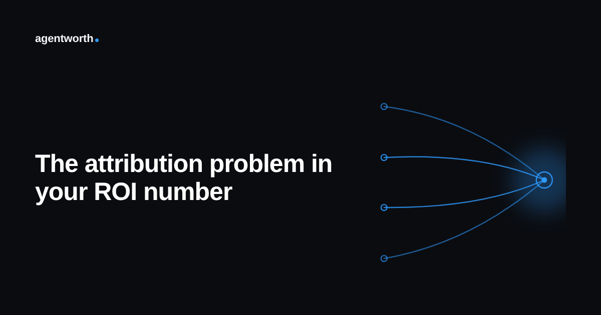

The attribution problem behind your AI agent's ROI number

A customer writes in about a billing error. The agent pulls up an account summary, finds a knowledge base article about proration, and drafts a reply. The customer pushes back once, a human support rep steps in to adjust the actual charge, and the ticket closes. At the end of the month, that ticket gets counted as one more resolution the AI agent handled.
It did not handle it alone. Four different things touched that ticket: the agent, a knowledge base article someone wrote months ago, a human who made the actual correction, and whatever system logged the charge in the first place. Yet almost every ROI dashboard assigns the full credit, and the full savings, to one of those four.
Full credit is the default, not a choice
Most agent platforms were not built to split credit. They were built to report whether a conversation ended without being escalated, and that binary gets quietly translated into "the agent resolved this ticket" on the ROI slide. There is rarely a deliberate decision to overstate the agent's role. It is just the only number the system knows how to produce, and nobody downstream questions it because it comes out of the same dashboard every week.
The effect compounds as a support operation matures. Early on, an agent handling genuinely simple, self contained requests makes full credit a reasonable approximation. As the agent gets wired into more of the workflow, pulling from a knowledge base, triggering a macro, handing off partway through a conversation, the number of tickets that were actually a team effort grows, while the reporting still treats every one of them as a solo win.
Where this bites finance specifically
Finance does not usually catch this in the number itself. They catch it when two different tools report different totals for what looks like the same work, or when a reviewed sample of "agent resolved" tickets turns out to have a human's fingerprints all over half of them. At that point the question stops being about the size of the savings and starts being about whether any of the reporting can be trusted, which is a much worse conversation to have.
It also quietly breaks comparisons across teams or quarters. A support org that leans more heavily on a shared knowledge base and tight macros will look like it has a weaker agent than one that lets the agent wing every answer from scratch, purely because the first org's wins get split with its own tooling while the second org's get claimed in full. That is not a difference in agent quality. It is a difference in how generously each team's dashboard assigns credit.
What a defensible split actually needs
The fix is not a smarter formula. It is a record of every system and person that touched a ticket before it closed, kept at the same level of detail as the resolution itself. With that record, credit can be split in proportion to what each party actually contributed, a knowledge base article that supplied one fact gets a small share, a human who made the final correction gets the larger one, and the agent gets exactly the piece it earned rather than a round number pulled from a closed ticket count.
That record also has a second use beyond fairness. The moment someone can see which tickets were true solo resolutions versus shared ones, they can ask a sharper question: is the agent's independent share growing over time, or is it just riding on top of better documentation and tighter human backup, work that was happening anyway? One of those is a case for more investment in the agent. The other is a case for crediting the people who built the scaffolding around it.
This is the kind of ledger agentworth's audit log keeps by default, tracking every system and handoff behind a resolution instead of collapsing it into one closed ticket, so the credit in your ROI number matches the work that actually happened. Try the free ROI calculator to see where your own number sits, or read the full ROI report for more on what a defensible AI agent ROI figure actually requires.